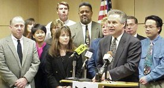
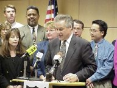
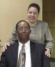
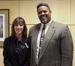
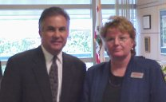

|
|
Fresno Selected as Finalist for |
| Fresno has
been selected as one of 30 Finalist communities in the 1999 All-America
City Award competition, a program of the National Civic League, supported
nationally by the Allstate Insurance Company. Fresno's entry competed with
93 other entries for the Finalist category.
Finalists in the competition will make presentations at the All-America City Awards June 24-26 in Philadelphia, Pennsylvania. Ten winning communities will be announced at a gala ceremony June 26th. Fresno will also prepare a community exhibit and exchange information with other Finalist communities at a Civic Action Fair. "These communities send a vital message of hope to the rest of the country," said Christopher Gates, President of the National Civic League. "They prove that challenges that seem insurmountable can be met with a little ingenuity and a lot of collaboration." The All-America City Award, presented annually since 1949 by the National Civic League, now celebrating it's 50 anniversary, recognizes excellence in local efforts to strengthen the civic infrastructure of America's communities. Fresno won the award 32 years ago. |

|

Headquartered in Denver, Colorado, the National Civic League (NCL) is a 105-year-old non-profit, non-partisan organization dedicated to strengthening citizen democracy by transforming democratic institutions. NCL accomplishes its mission through technical assistance, training, publishing, research, and the All-America City Awards, the nation's oldest and most prestigious community recognition program.
Related links:
View
Fresno's Application
The
National Civic League.

 
| Above and right: Mayor Patterson is joined by team members from Stone Soup, Oso deOro Park, Leadership Fresno and Care Fresno to celebrate Fresno's selection as a finalist. |